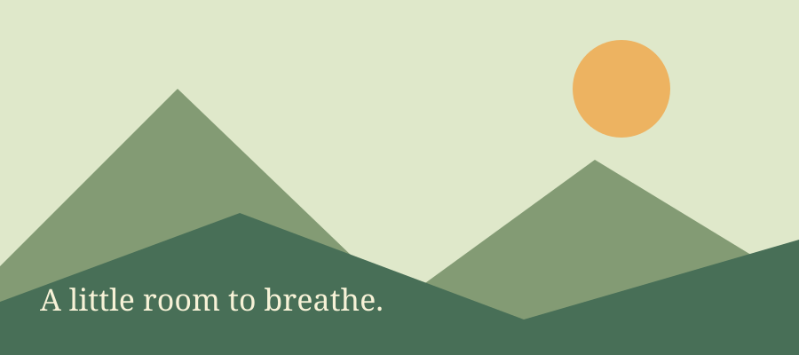

给自己一点空间，把重要的事情放在眼前。Take one small
step, then take a breath. 链接的下划线和颜色也应留下。Energy = mc2，还有
small caps、中文标点，以及这一段自然换行的文字。
第二行从明确的换行符开始。恢复后，原节点和点击行为继续保留。
允许自己稍微停一停。

文字里的小图应保持原来的大小，不铺满整行。A quiet thought can be a beginning.
function breathe() {
const next = "one thing at a time";
return next;
}
// 中英文代码注释，保留空格与换行。
خذ نفسًا عميقًا ثم ابدأ من جديد. خطوة واحدة تكفي الآن. A little room to breathe. 给自己一点空间。
A little space to breathe. Keep the shape of each word. Variable weights and kerning should match the original page, including italic words, mixed with 中文和标点。When a thought feels heavy, take one small step.
保留文字里的图标 ，也保留它和这一行文字的关系。An inline leaf, still part of the sentence.